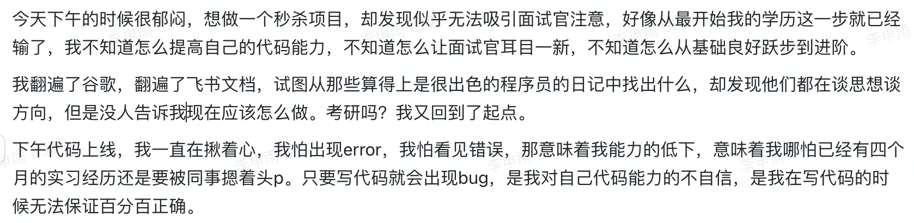

5.4 如何建立个人认知体系
1. 关键语句摘抄
- 知识和认知是不同的。并不是说实用的知识才是知识，而是在说，只有当知识能帮助你做实际决策的时候，它才是你的知识。
- 个人成长的目的不是理解和知道，而是判断和选择。
- 在阅读时，我唯一要做的事情就是：寻找触动点。我会在触动的地方做标记，在空白处写下大量能联想到的思考。书读完之后，我会放上几天，然后问自己，“这本书最触动自己的是哪个点？”这个点可以是一个理论、一个案例、甚至是一句话，只要它真正触动我，并能让我发生真实的改变，我就觉得这本书超值了，至于其他，忘记就忘记了，我一点也不觉得可惜。而作者的知识体系与框架，又与我何干呢？
- 人的能力是无法跳跃发展的，只能在现有基础上一点一点向外扩展，而扩展的最佳区域就在舒适区边缘。处于认知圈边缘的知识与我们的实际需求贴合得最紧密，因此也更容易让我们产生触动，进而与现有的知识进行关联。
- 触动碎片能够愈自身紧密结合，慢慢变成自己的一部分，最终织出一张属于自己的认知网络。
- 体系的本质就是用独特的视角讲一些零散的、独立的知识、概念或观点整合为应对这个世界的方法和技巧。
认知 知识 伪触动 触动点
2. 个人感触
突然阅读这本书，是因为某天下午的迷茫。没有工作、学历不算优秀、实践能力差…各种因素堆加在一起，突然觉得自己不知道该怎么做了。
我去找了我哥聊了聊，我哥告诉我。 当然我现在对于未来仍然没有一个确定性的回答，我始终迷茫着。但是我好像心里有了一点数。
当然我现在对于未来仍然没有一个确定性的回答，我始终迷茫着。但是我好像心里有了一点数。
“找不到工作，我的未来该怎么办？”，这是一个问题。
“如何提高自己的代码能力，确保自己在学历不算出彩的前提下获得能力出色的评价”，这也是一个问题。
这两个问题是我当前面对并无法解决的，我无法从与我经历不同的人身上找出一个通用的答案，这个答案只有我自己能给我自己，而我如何去解答？这就是认知能力。
没有筛选性的读工具书是无用的，不过可以助眠。如果没有一个亟待解决或极其感兴趣的问题，再有意义的语句也只不过是隔山打牛。关键在于触动。
而这个触动正如当前，我的需求和我的问题结合在一起，所以相关性的指导就可以触动我，我将其转换为自己的想法，就是扩展认知体系的过程。
所以停止读那些根本读不下去的书，或在阅读前翻一翻目录去了解是否有感兴趣的专题，否则所谓的阅读只是在浪费时间的时候给自己心理安慰。
当我不知道如何解决问题的时候，其实就是无法运用自己当前的知识，可能是我掌握的知识不够多，也可能是我的运用、反思不够多而出现了伪知识。